谭蔚泓院士高分文章汇总(2025-2026)
原文：https://mp.weixin.qq.com/s?__biz=MzAwMzIzOTk5OQ==&mid=2247535281&idx=1&sn=b8c0f7eb9b9ce9d147e803d7c683b542&chksm=9b3c33e1ac4bbaf7d06d2266d0f8a45041b149ceffce2b24b9f204dbf28b489bc2331020a5c2#rd 合集：文献速递
一、写在前面
今天整理的学术前沿主人公是：中国科学院院士、发展中国家科学院院士、中国科学院杭州医学研究所所长，浙江省肿瘤医院院长谭蔚泓，提起核酸适体（Aptamer）与靶向递送治疗，为核酸适体的医学应用奠定了重要的科学和技术基础，是分子医学领域的泰山北斗。他不仅首创了核酸适体-细胞筛选方法，近年来更是带领团队在单细胞分辨率下的靶点发现、肿瘤免疫微环境重塑等前沿方向屡创佳绩。本期我们特意为大家梳理了谭院士团队近期的高分研究成果。当然，大佬的重磅成果远不止篇幅所限的这几篇，欢迎大家在评论区留言交流你关注的相关研究文章。
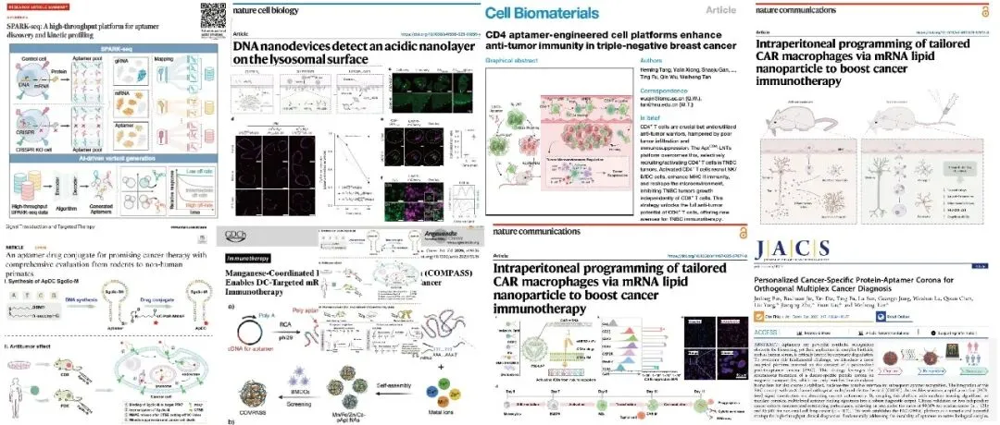
专家介绍：谭蔚泓，分子科学、化学生物学、分子医学专家，中国科学院院士、发展中国家科学院院士。美国密西根大学博士。现任中国科学院杭州医学研究所所长，浙江省肿瘤医院院长。曾任美国佛罗里达大学化学系和医学院杰出教授和冠名主任教授25年。现任教育部科技委员会委员，中国化学会副理事长，中国化学会分子医学专业委员会首任主任，浙江省医学会分子医学分会首任主任，浙江省医院协会副会长，中国抗癌协会常委等。担任CCS Chemistry和中国科学-化学副主编，曾任美国化学会JACS和 Analytical Chemistry副主编。
谭蔚泓教授长期致力于生物分析化学，化学生物学和分子医学的前沿研究与临床应用。提出了系列核酸化学和生物医学应用的新原理和新方法：他首次提出了核酸适体-细胞筛选方法，为核酸适体的医学应用奠定了重要的科学和技术基础。首次制备了核酸适体-药物偶联物，为靶向药物的研发打开了新的途径。开发单细胞蛋白组学的一系列核酸和蛋白的检测技术，利用核酸工程实现了这些疾病标志物的微量临床检测。目前正在全力推动基于核酸适体识别细胞膜表面蛋白分布的肿瘤分子分型新方法。针对这次新型冠状病毒感染，他带领团队开发了现场快速检测技术与试剂，获批国家药监局首个新冠POCT检测证并全力推动了mRNA疫苗的开发。谭蔚泓教授在Science等学术刊物上发表学术论文1000余篇，引用95000多次，H-index 170。2014-2023连续十年入选全球高被引研究人员名单。研究成果分别获2014年和2020年国家自然科学二等奖，2018年何梁何利基金科学与技术进步奖，2018年美国化学会“光谱化学分析奖”，2019年美国PITTCON分析化学成就奖、2019年Ralph N. Adams生物分析化学成就奖，2022年树兰医学奖，2024年世界分子影像学会Britton Chance奖。
更多单细胞/空转相关内容分享可见：Python scRNA-seq分析全流程R语言 scRNA-seq数据分析教程Python 空间转录组分析教程
二、主要内容
一、题目：SPARK-seq: A high-throughput platform for aptamer discovery and kinetic profiling
IF：45.8
期刊：Science
发表日期：2026.01
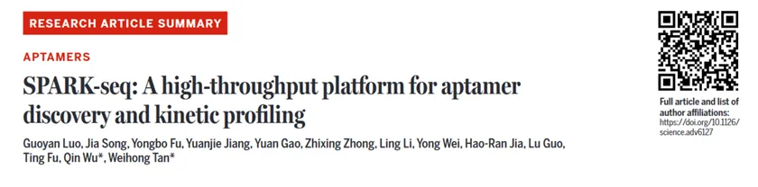
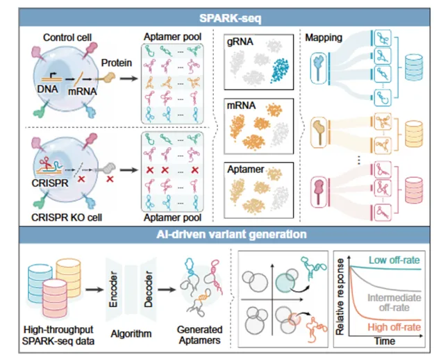
研究团队成功构建了全球首个能够在单细胞分辨率下，同步实现细胞膜表面标志物发现与靶向核酸适体探针获取的一体化平台——SPARK-seq 。该技术为分子识别、原创靶点发现及精准医学研究提供了全新的强大工具，有望为众多因靶点不明而缺乏有效疗法的疾病（如三阴性乳腺癌）开辟全新的治疗途径。
细胞膜蛋白是药物作用的关键靶点，而核酸适体是一类能够高特异性、高亲和力结合靶标分子的寡核苷酸，被誉为“化学抗体”，在疾病诊断与靶向治疗中潜力巨大。然而，传统的核酸适体筛选方法效率低、过程烦琐，且难以在生理相关环境下系统发现全新的疾病标志物。
SPARK-seq的工作原理清晰高效，主要分为三个关键步骤：
第一步：利用 CRISPR基因编辑技术对大量癌细胞进行“微创手术”，精准剪掉特定的膜蛋白。
第二步：引入包含海量候选分子的核酸适体库。
第三步：借助单细胞测序技术，为每个细胞拍摄“高清全景照”，在同一个细胞里同步读取“谁被剪掉了”“细胞变了吗”“谁结合上去了”关键信息。通过自主研发的新算法和大数据分析，SPARK-seq将细胞膜表面标志物的发现从“间接推测”转变为可“直观解读”的数字信号。
二、题目：Intraperitoneal programming of tailored CAR macrophages via mRNA lipid nanoparticle to boost cancer immunotherapy
IF：15.7
期刊：Nature Communications
发表日期：2025.12
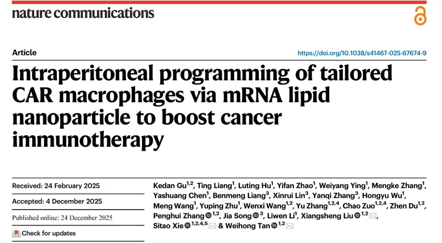
研究团队报道了他们最新开发的一种通过腹腔内注射 mRNA 脂质纳米颗粒，并在体内原位编程定制化 CAR-M 的新策略，可用于治疗腹膜转移的实体瘤。研究团队系统评估了 36 种不同胞内结构域（ICD）的 CAR 设计，发现含有CD3ζ 与 TLR4 跨膜结构域的并联 CAR-M 能有效激活适应性免疫系统，并与 PD-1/L1 免疫检查点阻断疗法产生协同效应。单细胞转录组测序分析结果显示，该CAR-M 可重塑免疫抑制性肿瘤免疫微环境，促进巨噬细胞向促炎 M1 表型极化，并通过 NF-kB 通路上调 MHC-I 和PD-L1 表达，进而并促进了 TCF1+PD-1+ 祖细胞耗竭的 CD8+ T 细胞的生成，该群体对 PD-1 治疗敏感。此外，在两种对 PD-1/L1 治疗抵抗的小鼠模型中，该 CAR-M 联合 PD-1 抗体能显著抑制肿瘤生长并延长生存期，展现出良好的治疗潜力与临床转化前景。
三、题目：DNA nanodevices detect an acidic nanolayer on the lysosomal surface****
IF ：19.5
期刊：Nature Cell Biology
发表日期：2026.02
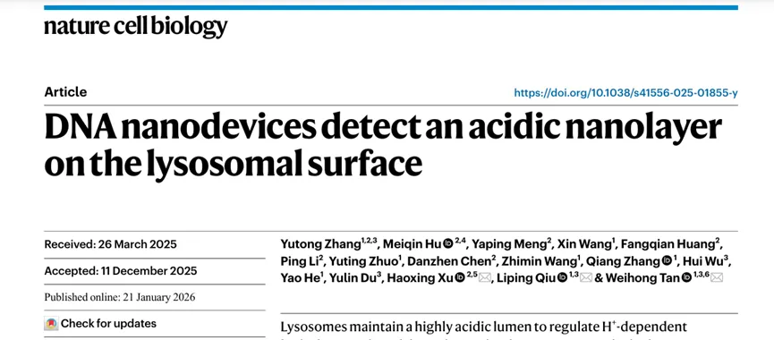
在该工作中，研究人员开发了一种可以“锚定”在溶酶体膜表面的DNA纳米尺，通过在不同位点修饰对氢离子敏感和不敏感的荧光染料，从而精准测量溶酶体膜表面的局部 pH 值。
利用该工具，研究团队发现溶酶体外侧持续包裹着一层厚约20 纳米的氢离子层，并揭示了该酸性纳米层的维持依赖于溶酶体膜上的氢离子通道蛋白TMEM175。团队进一步证明，溶酶体表面的pH值，而非内腔pH，是调控其在细胞内的运动与空间分布的关键信号。此外，研究鉴定了细胞质中的RILP蛋白作为下游氢离子感应器，能够感知溶酶体表面的酸性变化，进而引导溶酶体向细胞核方向移动，并启动相关生理功能。这一发现有望为理解TMEM175基因突变如何通过破坏此纳米环境导致帕金森病提供新视角。
四、题目：Targeted clearance of extracellular Tau using aptamer-armed monocytes alleviates neuroinflammation in mice with Alzheimer's disease
IF：26.7
期刊：Nat Biomed Eng
发表日期：2025.10
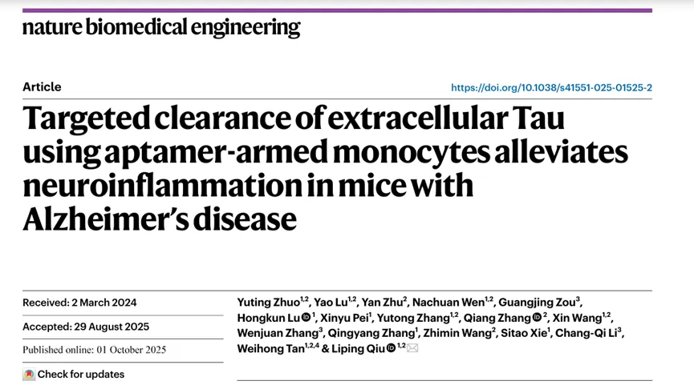
研究团队开发了一种基于单核细胞的清除 Tau 蛋白的细胞疗法——Apt-M，该单核细胞通过高亲和力的 Tau 蛋白特异性核酸适配体进行了功能化修饰。Apt-M 治疗后，阿尔茨海默病小鼠模型的神经胶质细胞的激活受到抑制，神经炎症得到缓解，神经元和线粒体的完整性得以保持。长期治疗则改善了阿尔茨海默病小鼠模型的记忆和空间学习能力，且未引发毒性或行为方面的副作用。
这项研究表明，核酸适配体 （Aptamer）引导的单核细胞能够实现靶向递送、有效清除以及持续的神经保护，为阿尔茨海默病 （AD）的治疗干预提供了一种很有前景的策略。
五、题目：CD4 aptamer-engineered cell platforms enhance anti-tumor immunity in triple-negative breast cancer
期刊：Cell Biomaterials
发表日期：2026.01
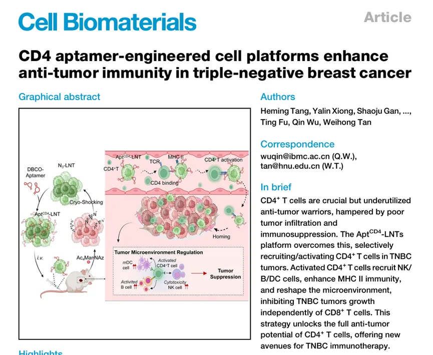
该研究开发了CD4 核酸适配体工程化液氮处理癌细胞（AptCD4-LNT），能够选择性招募并激活 CD4+T 细胞，在体内驱动 CD4+ T细胞的特异性浸润和活化，还能增强 NK 细胞、B 细胞和树突状细胞的浸润和活性，重塑免疫环境，强烈抑制三阴性乳腺癌（TNBC）肿瘤生长。
该系统利用 CD4 核酸适配体对 CD4+ T 细胞的特异性靶向和氮处理癌细胞（LNT）的归巢能力，促使 CD4+ T 细胞在三阴性乳腺癌肿瘤微环境中实现靶向浸润和激活。活化的 CD4+ T 细胞反过来又能增强 NK 细胞、B 细胞和树突状细胞的浸润和活性，重塑免疫环境，增强抗肿瘤反应。
六、题目：An aptamer-drug conjugate for promising cancer therapy with comprehensive evaluation from rodents to non-human primates
IF：52.7
期刊：Signal Transduct Target Ther
发表日期：2025.09
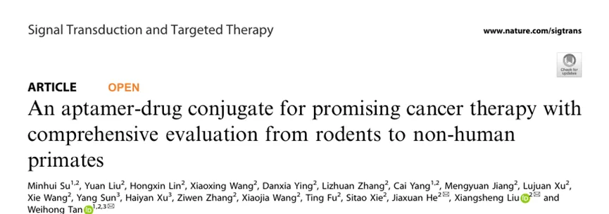
在这项最新研究中，研究团队开发了一种靶向蛋白酪氨酸激酶-7（PTK7）的 ApDC——Sgc8c-M ，该ApDC 药物是通过将强效抗有丝分裂剂 MMAE 与经典的 PTK7 核酸适配体 Sgc8c 偶联而成。研究团队对其进行了从啮齿类动物到非人灵长类动物（NHP）的全面评估。结果显示，Sgc8c-M 能够有效诱导细胞系来源的和患者来源的异种移植瘤模型产生持续的肿瘤消退，其效果优于未偶联的 MMAE、化疗药物紫杉醇，以及一种靶向 PTK7 的抗体药物偶联物（ADC）。且在食蟹猴猴中耐受性良好，多次给药后未见明显蓄积。
七、题目：Manganese-Coordinated Polyvalent Aptameric System (COMPASS) Enables DC-Targeted mRNA/Mn 2+ Co-Delivery for Cancer Immunotherapy
IF：16.9
期刊：Angewandte Chemie International Edition
发表日期：2026.01
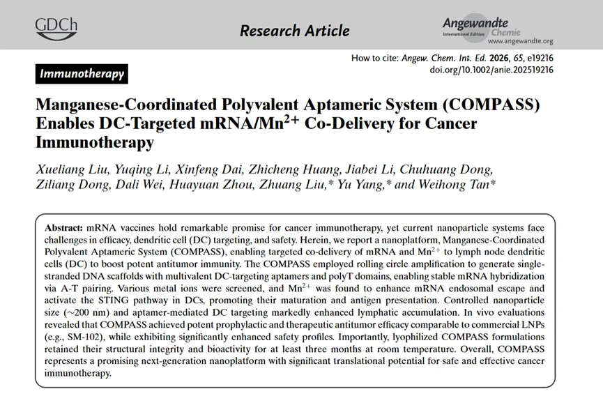
研究团队提出了一种名为**“ 锰配位多价适配体系统**”（Manganese-Coordinated Polyvalent Aptameric System, COMPASS）的新型纳米递送平台。 该研究巧妙利用了DNA 纳米技术的编程性，更引入了金属免疫治疗（Metalloimmunotherapy）的概念，通过添加锰离子作为佐剂，诱导了高效的内体逃逸并激活 STING信号通路，使干扰素-β（IFN-β）水平提升了 3.2倍，从而在极高安全性下协同增强了树突状细胞的成熟与抗原呈递。
此外，他们还通过优化粒径、引入适配体，在器官 -细胞的双重层面上诱导了对引流淋巴结DC细胞的精准导向。最终COMPASS在动物模型中展现出了强大的预防和治疗性抗肿瘤效果，效力与商用 LNP相当，而安全性显著提高。此外，该冻干制剂可在室温下稳定储存至少三个月 ，突破了mRNA疫苗对冷链运输的依赖。
八、题目：Lysosomal Cathepsin S Escape Facilitates Near Infrared Light-Triggered Pyroptosis Via an Antibody-Indocyanine Green Conjugate
IF：14.1
期刊：Adv Sci (Weinh)
发表日期：2025.09
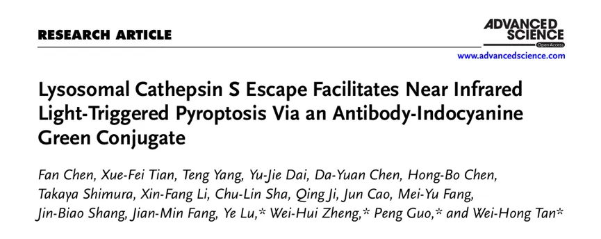
研究团队首次发现溶酶体蛋白酶 Cathepsin S（CTSS）可替代传统的caspase-1，直接执行焦亡反应，为肿瘤治疗提供了非凋亡 免疫激活的新机制。研究人员将该机制成功应用于ADC 药物设计，开发出一种能够通过近红外光（ NIR）启动肿瘤细胞焦亡的光敏型ADC产品。
多种实体肿瘤模型实验显示，NIR 焦亡机制不仅实现了持续的肿瘤抑制，还在与PD-1抑制剂联合应用时展现出增强疗效。这些结果强调了CTSS在焦亡中的关键作用，并为下一代ADC开发提供了新方向。
九、题目：Personalized Cancer-Specific Protein-Aptamer Corona for Orthogonal Multiplex Cancer Diagnosis****
IF ：15.7
期刊：J Am Chem Soc
发表日期：2025.11
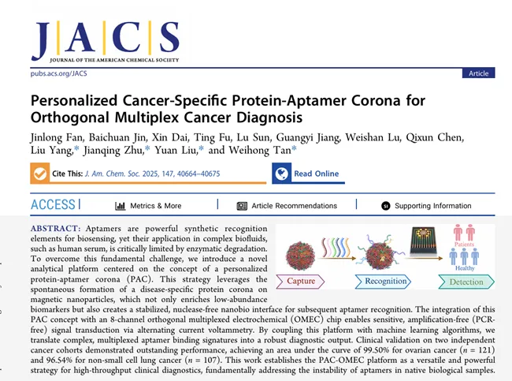
文章提出了一种创新的癌症诊断平台，结合了个性化蛋白质-适配体电晕 与正交多路电化学传感技术，并集成机器学习算法，实现了对卵巢癌和非小细胞肺癌的高精度、无扩增（PCR-free）检测。使用磁性纳米颗粒（如AuNP、FeNP）在患者血清中形成个性化蛋白质电晕，富集低丰度癌症标志物。随后引入多路适配体，形成蛋白质-适配体电晕，在无核酸酶环境中稳定识别目标蛋白。
该研究解决了适配体在生物样本中不稳定的根本问题，通过PAC策略在纳米界面实现保护性识别。实现了高通量、无扩增、多路复用癌症诊断，具备临床转化潜力。平台通用性强，可扩展至其他癌症或疾病类型的诊断。为个性化医疗、早期筛查、低成本POCT设备开发提供了新路径。
** **
十、题目：Aptamer-based Positron EmissionTomography Imaging Allows SpecificDetection of Residual Bladder Cancer: AFirst-in-Human Study****
IF ：25.2****
期刊： European Urology
发表日期：2026.01
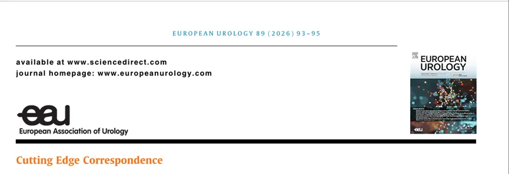
研究团队以突破性研究进展形式发表了一项具有重要意义的临床研究成果。该研究首次在人体中应用一种基于适配体（aptamer）的分子影像探针，实现了对膀胱癌术后残留病灶的高特异性、高灵敏度检测，为膀胱癌的精准诊断和术后管理提供了新工具。
三、随便聊聊
站在巨人的肩膀上，方能看得更远。追随前辈学者的脚步，是我们深耕科研的重要路径。此前，我们已推出多期科学家系列专题，诚邀各位同道交流探讨，共促学术精进。同时我们也发布许多单细胞分析复写，如果对文献复现感兴趣的朋友欢迎联系客服[Biomamba_zhushou]进群，大家一起交流和学习~汤神近5年学术成果集锦张泽民院士近年高分文章集锦（2020-2025）樊嘉院士近年高分文章集锦（2022-2026）84岁高龄依旧在做高质量科研，陈润生院士近年文章集锦（2021-2026） 如果需要单细胞数据分析教学、生信热点全文复现、自测数据个性化分析辅导、常态化实验学习，欢迎联系客服微信[Biomamba_zhushou]。

如何联系我们

 留一个领取资料、开箱即用的单细胞分析镜像的微信号[Biomamba_zhushou]，方便各位随时交流。同时我们也构建了交流群矩阵，欢迎大家入群讨论。
大家可以阅读完这几篇之后添加给生信入门初学者的小贴士
没有检索，就没有发言权
留一个领取资料、开箱即用的单细胞分析镜像的微信号[Biomamba_zhushou]，方便各位随时交流。同时我们也构建了交流群矩阵，欢迎大家入群讨论。
大家可以阅读完这几篇之后添加给生信入门初学者的小贴士
没有检索，就没有发言权
已有生信基地联系方式的同学无需重复添加

 您点的每个赞和在看，我都认真当成了喜欢
您点的每个赞和在看，我都认真当成了喜欢